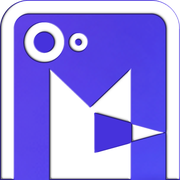
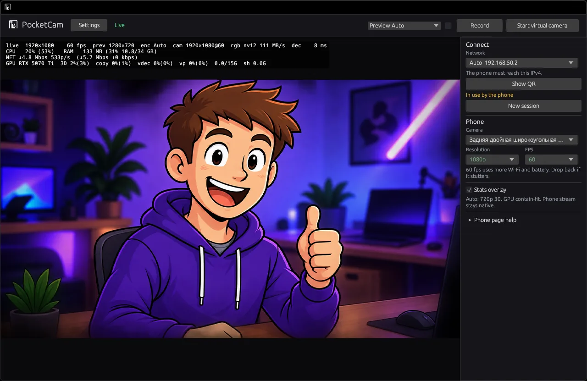
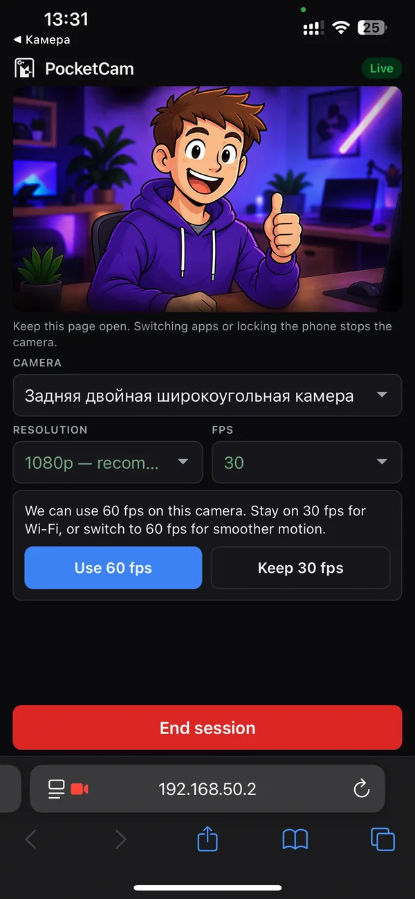
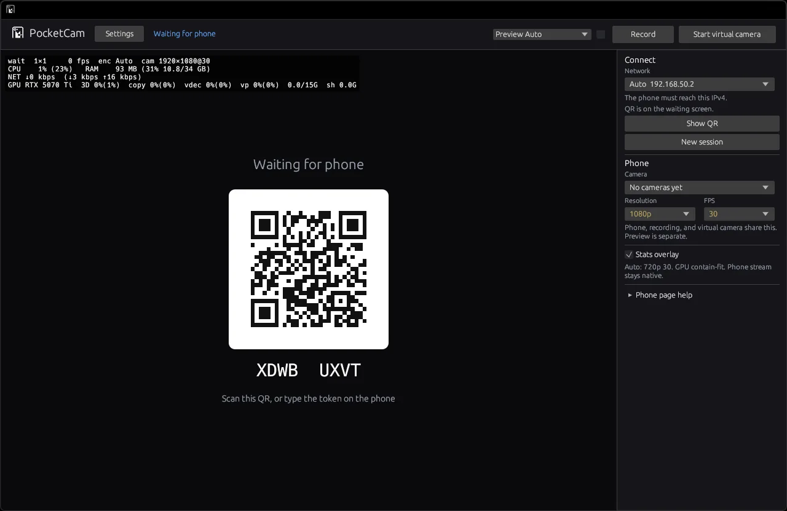
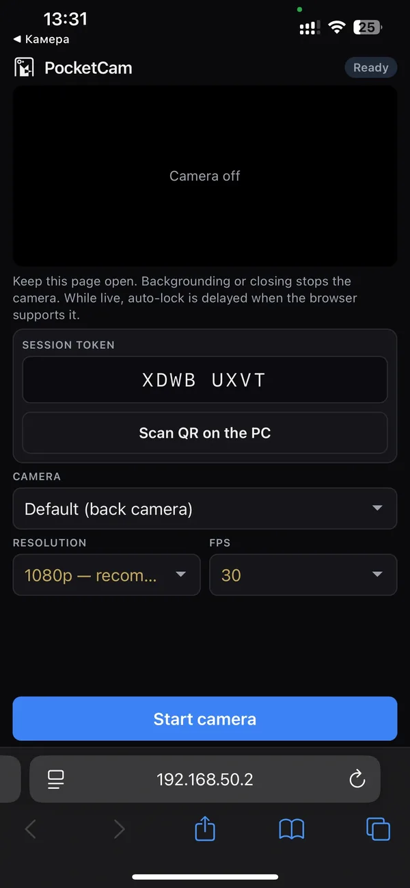

Zero install on the phone
Safari on iPhone, Chrome on Android. A Home Screen shortcut is optional — it is still the browser.

PocketCamFree for Windows 11 · no phone app
Open PocketCam, scan the QR with Safari or Chrome, allow the camera. OBS, Discord, Zoom, Teams and the Windows Camera app see a camera named PocketCam. Same Wi-Fi — no accounts, no cloud, no cable.
Phone browser→your PC→any webcam app


How it works
The phone side is just a web page served by PocketCam on your PC. Keep it open while you are live.
Run PocketCamSetup.exe. It registers the virtual camera and a private-network firewall rule, then open PocketCam from the Start menu.
Use Safari on iPhone or Chrome on Android. Continue past the certificate warning — it is for this PC — then tap Start camera.
Choose PocketCam as the camera in OBS, Discord, Zoom, Teams or Windows Camera. That's it.


Features
Everything runs between your phone and your PC on your own network.
Safari on iPhone, Chrome on Android. A Home Screen shortcut is optional — it is still the browser.
The stream never leaves your Wi-Fi or phone hotspot. No accounts, no cloud. Google STUN stays off unless you turn it on.
Shows up as PocketCam in any app that can pick a webcam. No plugins needed.
Pick 480p through 4K. The default is 1080p30 — free, with no watermark.
Saves the phone's H.264 to MP4 — not a second encode — in Videos\PocketCam or a folder you choose.
Close the window and the camera keeps running until you choose Exit.
Get started
PocketCam v1 is a Windows 11 app for one phone at a time, over Wi-Fi.
Not in v1: USB, a virtual microphone, Windows 10, or several phones at once.
PocketCamSetup.exe from the latest GitHub Release.FAQ
It is expected. PocketCam uses a certificate for this PC, not a public website. Continue past the warning and the phone page opens.
Unsigned builds can show SmartScreen. Click More info, then Run anyway. Only download the installer from the official GitHub Releases.
Phones stop the camera when the page is gone — that is iOS and Android, not PocketCam. Keep the PocketCam page open in the foreground. While you are live, it holds a Screen Wake Lock so auto-lock does not end the session.
Make sure both are on the same Wi-Fi, or put the PC on the phone's hotspot. The installer adds a Windows Firewall rule for a private network. PocketCam also lets you choose which network address the QR points to.
After switching between 720p, 1080p and 4K, pick PocketCam once more in that app. You don't need to restart OBS.
No. The same token works for about five minutes. New session makes a new one, and Show QR brings the code back.
To Videos\PocketCam as pocketcam-YYYYMMDD-HHMMSS.mp4, or to another folder you pick in Settings. Recording starts on the next keyframe.